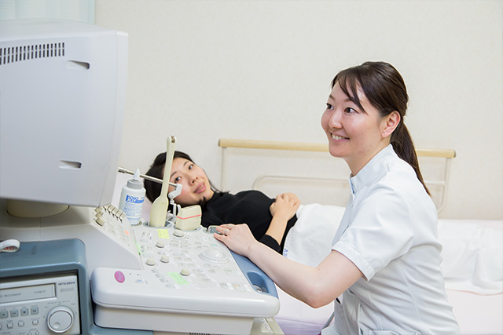

レディースドック・ブライダルドック

健康を守るためには定期的な健康診断が必要です。
当院では、すべての女性にご自身の健康のために、以下のコースをご用意しています。
調布市子宮がん健診・乳がん健診にも対応しております。
042-484-2626お気軽にお電話ください
担当するのはすべて常勤の女性医師です。
男性医師には相談しにくいデリケートな問題でもぜひご相談ください。
適切な診断と治療をモットーに、患者様のご希望に配慮しながら診療を行っています。
小さなお子さんから、ご高齢の方、お身体の不自由な方まで、婦人科的な症状でお悩みのすべての方に安心して診療をお受けいただけるバリアフリーな診察室です。
女性の健康を守るためのレディースドックや、ご結婚前にお勧めするブライダルチェックのコース（女性コース・男性コース）もございます。
お電話でご希望日の診察のご予約や、予約の変更が可能です。
当院産婦人科の患者様には、夜間や休日の突然の体調不良時の電話再診にて医師が必要と判断した時には救急外来で診察させていただきます。
健康を守るためには定期的な健康診断が必要です。
当院では、すべての女性にご自身の健康のために、以下のコースをご用意しています。
調布市子宮がん健診・乳がん健診にも対応しております。
いらいらする、ほてる、なんだか最近おかしいな、そう思ったらご相談ください。
まずは更年期症状かどうかを確認するために必要な検査を行いましょう。
その後、漢方を主体とした体質改善や、ホルモン補充療法など、症状に応じて適切に治療していきます。
妊娠を希望してご夫婦なりに努力してきたが、授からないまま１年間過ぎてしまった・・・。
それは、もしかしたら不妊症かもしれません。
当院では一般的な不妊症検査および人工授精までの不妊治療を行っています。
体外受精など高度な不妊治療が必要な場合は専門施設にご紹介しています。
ご自身の人生でいつ妊娠・出産するのかは女性自身が決定するべきです。
望まない妊娠による人工妊娠中絶は心身に非常に負担になります。男性まかせの避妊方法ではなく、産みたい時までは妊娠しないように女性自身がコントロールする、そのひとつの選択肢がピルであり子宮内避妊具（IUS）です。
緊急避妊ピルといって、避妊に失敗してしまった場合、７２時間以内に服用することで、妊娠する可能性を低下させる薬剤も産婦人科で処方できます。
また、ピルや子宮内避妊具は避妊目的だけではなく、月経困難症に対する新しい治療法のひとつでもあります。
まずはお気軽に担当医にご相談ください。
ご自身に合った方法を一緒に考えていきましょう。
かゆみやおりもの、月経不順や生理痛、乳房の症状、膀胱炎症状など、女性のさまざまな症状について診療しています。
小さなお子さんからご高齢の方まで幅広い年齢層の方が受診されています。
できれば男の子がほしい、女の子がほしい、そんなご希望にお応えして、サプリメントや専用のゼリーなどを使用する産み分けの指導を行っています。こちらに関しては、すべて自由診療（保険適応外）になります。